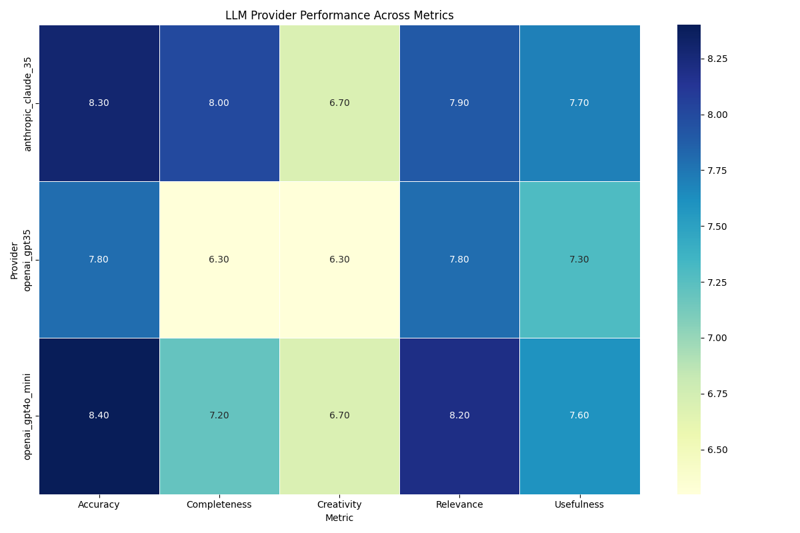
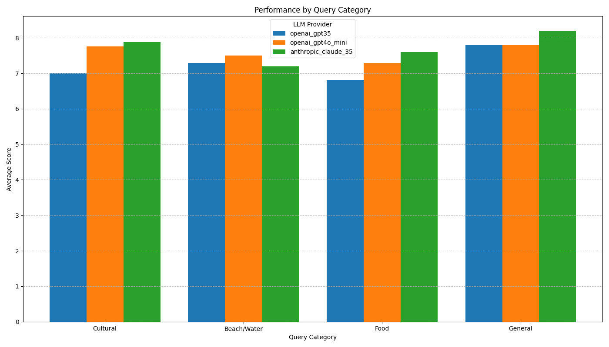

Travel Planner LLM Evaluation Report
Overall Performance Summary
| Provider | accuracy | relevance | completeness | usefulness | creativity | overall |
| openai_gpt35 | 7.80 | 7.80 | 6.30 | 7.30 | 6.30 | 7.10 |
| openai_gpt4o_mini | 8.40 | 8.20 | 7.20 | 7.60 | 6.70 | 7.62 |
| anthropic_claude_35 | 8.30 | 7.90 | 8.00 | 7.70 | 6.70 | 7.72 |
Performance Heatmap

Performance by Query Category

Metric Distribution
Improvement Suggestions
openai_gpt35
- Make itineraries more complete by adding more details about attractions, timing, transportation between sites, and practical information.
- Boost creativity by offering unique experiences, personalized recommendations, and themed itinerary options that go beyond standard tourist attractions.
openai_gpt4o_mini
- Boost creativity by offering unique experiences, personalized recommendations, and themed itinerary options that go beyond standard tourist attractions.
- Make itineraries more complete by adding more details about attractions, timing, transportation between sites, and practical information.
anthropic_claude_35
- Boost creativity by offering unique experiences, personalized recommendations, and themed itinerary options that go beyond standard tourist attractions.
- Increase usefulness by adding local tips, off-the-beaten-path suggestions, and practical information about opening hours, tickets, and costs.